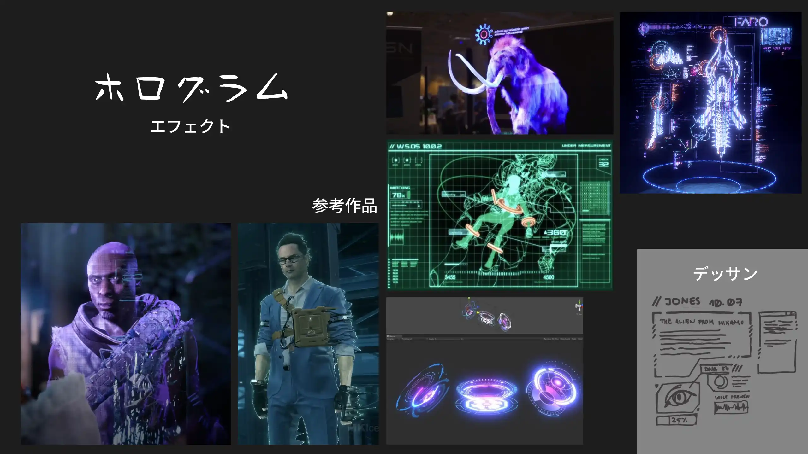
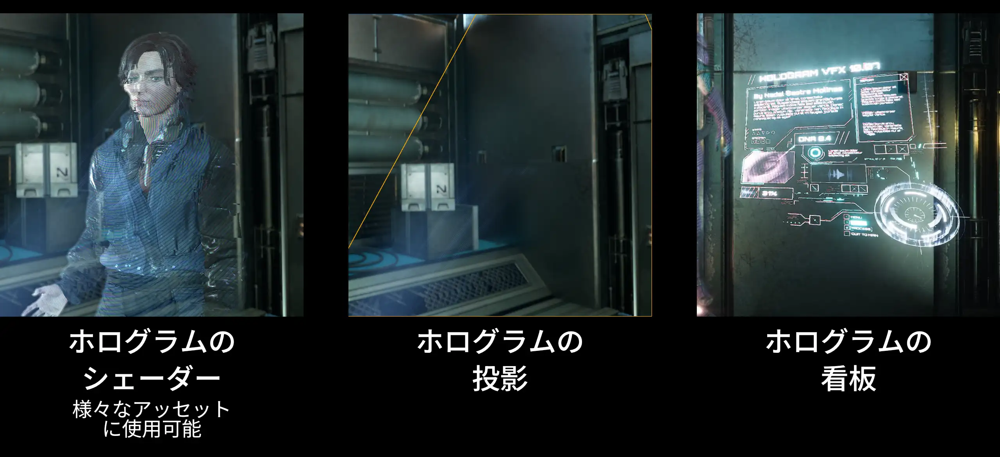
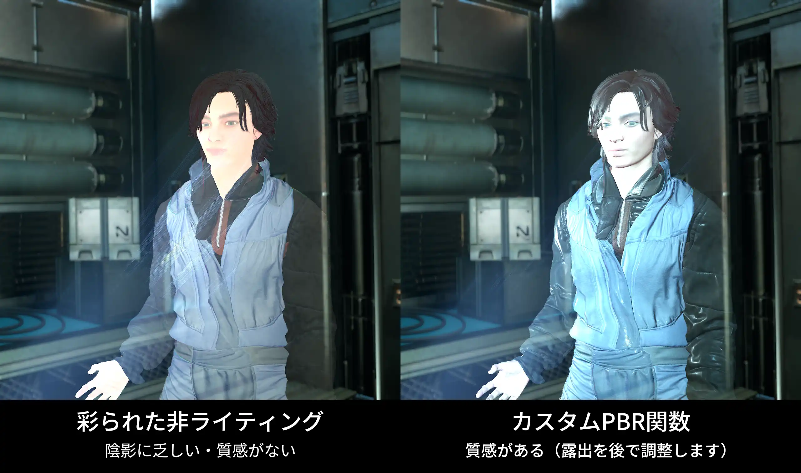
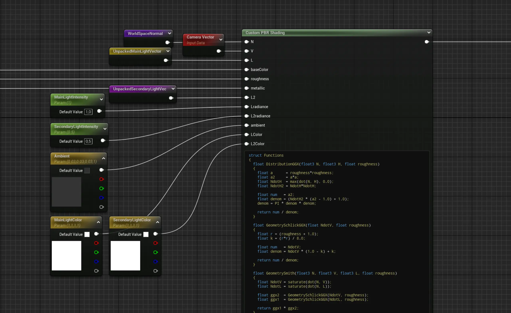
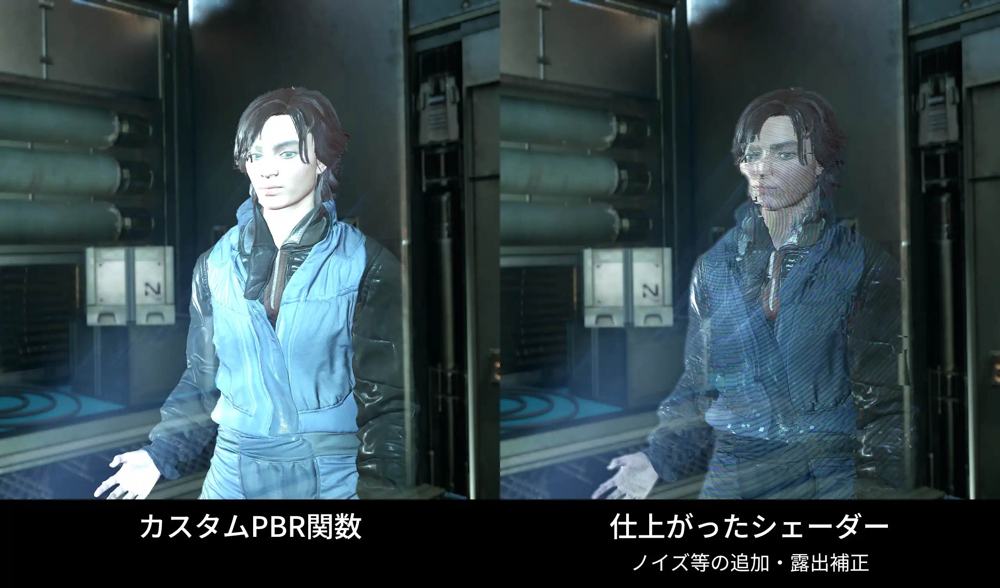
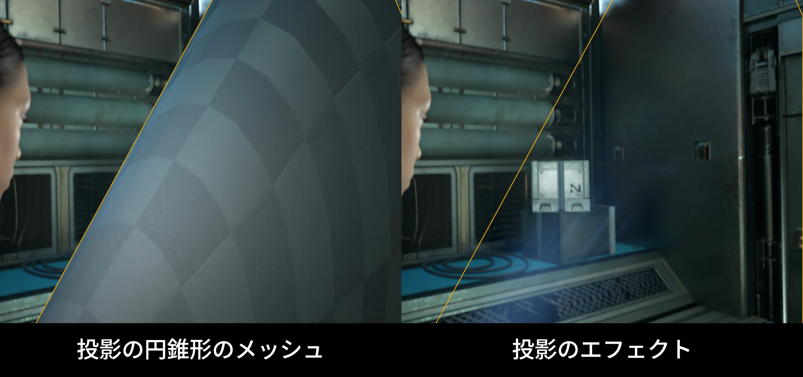
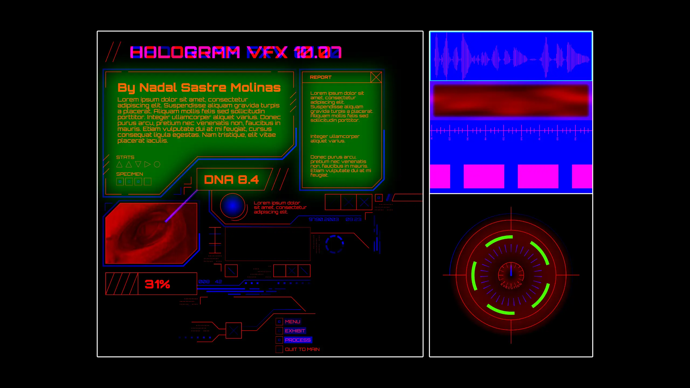
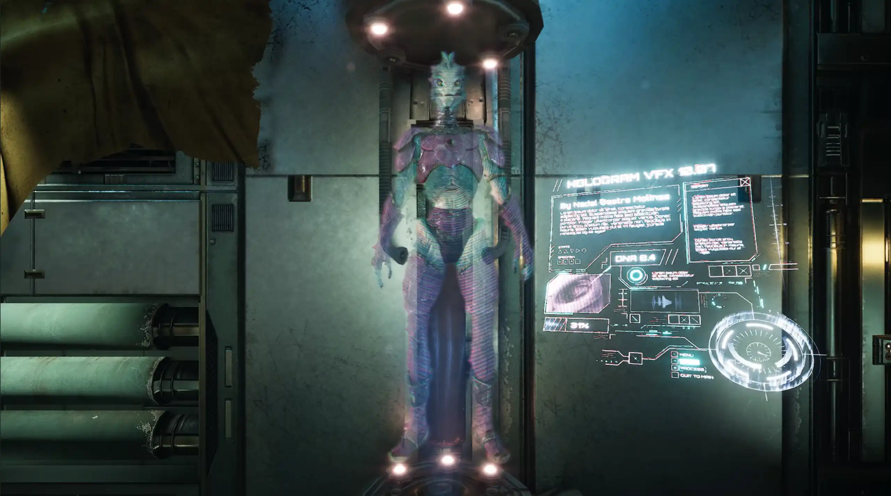

2025年6月
Unreal Engine, Substance Designer, 3DS Max, Adobe Illustrator, Affinity Designer
私はエフェクト・シェーダーを制作しました。
背景・衣装・キャラクター・キャラクターアニメーションは他のアーティストのアッセットです。

Unreal Engineで作り上げましたホログラムのエフェクトは３つの要素があります：

ホログラムのシェーダーはモデルにホログラムのような外見を与える役割です。 以下の動画に進んだステップが写っています。 非ライティングの透明シェーディングモデルに基づき制作しました。 カラーカーブ機能を利用し改めて彩りました。 カラーカーブ機能のおかげで色を調整することが簡単です。
次に、本来の質感を回復しました。 ホログラムは光でできているものであり、シーンの光の影響を受けませんが、どこかで実際に撮影された画像ですので、それは元の光や画質があります。 それで、HLSLノードを利用し、簡略なPBR関数を作りました。 こうすると、シーンの光の影響を受けずに、質感を意識できるし、元の陰影もつけました。 光の色、強度、位置はマテリアルパラメータで調整可能です。


その上に、ノイズやグリッチエフェクトを加えました。 ポストプロセス マテリアルを利用し、輪郭がぶれるのも特徴です。
出入りする時のアニメーションはMaterial Parameter Collectionにより調整できます。

ホログラムの投影のエフェクトは、円錐形のメッシュにテクスチャを動かすシェーダーです。 メッシュのUV座標、または画面のUV座標に基づきテクスチャをマッピングしました。

グリッチエフェクトを利用し、ダイナミックな看板を制作しました。 看板を動かすために、RGBチャンネルをグレースケール情報で設定し、それをシェーダートリックでアニメーションを制作しました。


ポートフォリオ制作過程